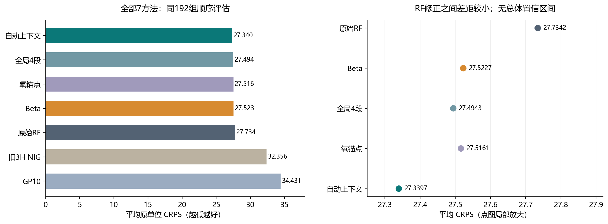
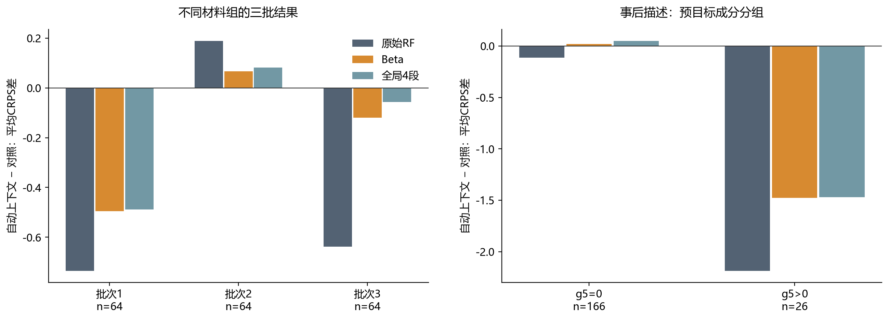
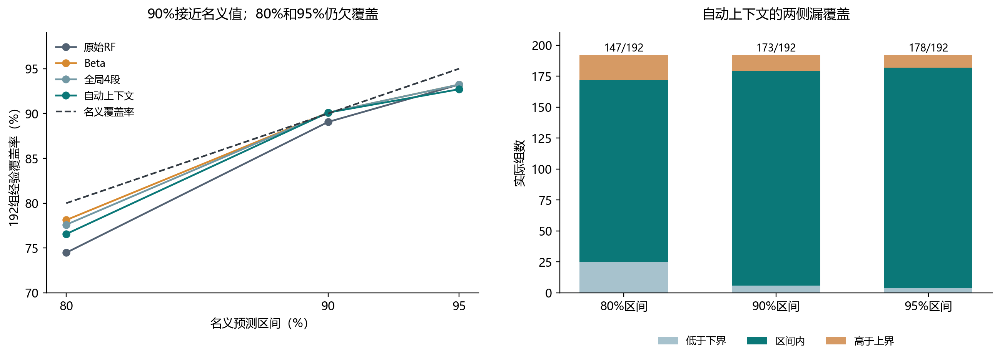

192组公开计算报告开发评估：同信息RF的平均CRPS由27.734154降至27.339658，约改善1.422%。对Beta和全局修正的额外差距更小；RMSE没有获胜，80%和95%区间仍欠覆盖。全部正负对照保留。
| 方法 | 平均CRPS ↓ | 中位数RMSE ↓ |
|---|---|---|
| RF_identity | 27.734154 | 50.957247 |
| RF_beta | 27.522737 | 51.457306 |
| RF_global4 | 27.494279 | 51.553293 |
| RF_anchor4 | 27.516122 | 52.020108 |
| RF_auto4 | 27.339658 | 51.173305 |
| GP10 | 34.430675 | 60.839001 |
| old3_NIG | 32.356408 | 58.393175 |

F新(y|x)=Tθ(g(x))(F_RF(y|x))，θ(g)=(1−g)θ0+gθ1。保留原支持和完整参考法则；只学两组四段正概率质量。Q/b/c压缩修正的损失几何，不强迫完整材料分布低秩。g只在过去168组OOF配对上选择一次；后续只追加预测先冻、真实目标后揭的配对。

第二批并未获胜，收益集中于部分成分组；该图是事后描述，没有用于更换上下文或重训练选择。

90%覆盖173/192，80%为147/192、95%为178/192。中位数RMSE51.1733略差于原始RF50.9572。三个顺序批次不是三个独立实验campaign，不把描述SE解释成正式总体显著性。
本公开子集省略原数据和逐材料数值；完整本地包另存。成熟的CDF校准、proper CRPS和RF构件有先例；本轮是限定用途的材料适配与开发证据，不宣称顶会达标或任意缺失模式联合生成。水凝胶MLST保持独立。